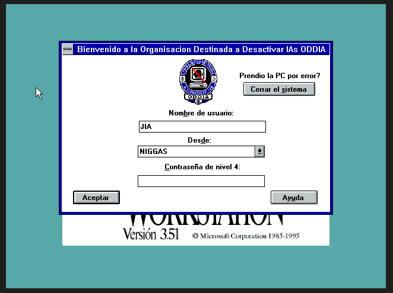

Hoy recibí un correo electrónico de un remitente desconocido. No tenía asunto, solo esta imagen.

No encontré ninguna referencia a la organización "ODDIA". Si alguien sabe algo, agradecería información.